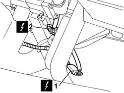
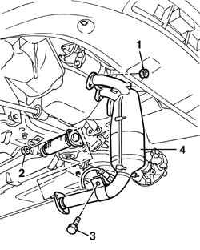
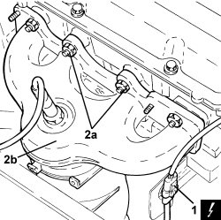

1072C16 exhaust manifold with catalytic converter - r r
- Path
- Procedures > 10 ENGINE > 1072 INLET AND EXHAUST MANIFOLDS > 1072C EXHAUST MANIFOLDS > 1072C16 exhaust manifold with catalytic converter - r r
- Kind
- repair procedure (removal / refitting; the operation number is the code)
- Applies to
- engines: 1.2 8v, 1.4 8v; all production periods
- Interactive page
- https://sloeber94.github.io/elrnDB-fDbl/en/#/2584259
Applies to: engines: 1.2 8v; all production periods
 Removing
Removing
 Refitting
RefittingPosition the vehicle on the lift.
Op. 7055B54 PROTECTION/GUARD UNDER ENGINE - R.R.
Disconnect the negative battery terminal.
Op. 1072C44 EXHAUST MANIFOLD HEAT SHIELD R+R
1. Disconnect the electrical connector of the lambda sensor on the exhaust manifold.
Description | Connector | |
|---|---|---|
1 | Lambda sensor |
2. Disconnect the electrical connector of the lambda sensor located upstream of the catalytic converter.
Description | Connector | |
|---|---|---|
2 | Lambda sensor - 2 |

Applies to: engines: 1.2 8v; all production periods
Raise the vehicle.
1. Undo the nuts fixing the manifold/catalytic converter to the cylinder head.
2. Undo the nuts fixing the manifold/catalytic converter to the exhaust pipe.
3. Undo the bolt fixing the manifold/catalytic converter mounting bracket to the gearbox.
4. Remove the manifold/catalytic converter.

Applies to: engines: 1.2 8v; all production periods
Refitting
RemovingPosition the exhaust manifold/catalytic converter and tighten the nut securing the bracket to the gearbox to torque.
Fastening | Component | dia | Value (daNm) | |
|---|---|---|---|---|
- | Bolt | CATALYTIC CONVERTER (ONE) | M8 | (Collar to gearbox) 2.8 |
Tighten the retaining nuts to the intermediate exhaust pipe to torque.
Fastening | Component | dia | Value (daNm) | |
|---|---|---|---|---|
- | Nut | CATALYTIC CONVERTER (ONE) | M8 | (Union flange to intermediate exhaust pipe) 3 |
Tighten the retaining nuts to the cylinder head to torque.
Fastening | Component | dia | Value (daNm) | |
|---|---|---|---|---|
- | Nut | CATALYTIC CONVERTER (ONE) | M8 | (Manifold to cylinder head) 3 |
Lower the vehicle.
Connect the electrical connections for the Lambda sensor.
Description | Connector | |
|---|---|---|
- | Lambda sensor |
Description | Connector | |
|---|---|---|
- | Lambda sensor - 2 |
Op. 1072C44 EXHAUST MANIFOLD HEAT SHIELD R+R
Connect the negative battery terminal.
Op. 7055B54 PROTECTION/GUARD UNDER ENGINE - R.R.
Remove the vehicle from the lift.
Applies to: engines: 1.4 8v; all production periods
Removing
Refitting- Position the vehicle on a lift.
Op. 1048A10 AIR FILTER ASSEMBLY - R.R.
Op. 1072C44 EXHAUST MANIFOLD HEAT SHIELD R+R
- Disconnect the exhaust pipe from the connection flange to the catalytic converter and from the flexible mountings, move it aside and secure it appropriately.
Applies to: engines: 1.4 8v; all production periods
1. Disconnect the electrical connection for the Lambda sensor downstream of the catalytic converter.
Description | Connector | |
|---|---|---|
1 | Lambda sensor on catalyzer |
2. Undo the nuts (2a) and remove the exhaust manifold and catalytic converter (2b).
- Remove the exhaust manifold gasket.

Applies to: engines: 1.4 8v; all production periods
Refitting
Removing- Place the exhaust manifold, catalytic converter and gasket in its housing and secure it tightening the nuts to the recommended torque.
Component | Fastening | dia | Value (daNm) | Validity |
|---|---|---|---|---|
Exhaust manifold | Nut | M8 | 1.4 ÷ 1.6 + 30° +/- 3° | 1.2 8v 1.4 8v 1.3 Multijet |
- Connect the electrical connection for the Lambda sensor downstream of the catalytic converter.
- Connect the exhaust pipe to the connection flange to the catalytic converter and to the flexible mountings.
- Remove the vehicle from the lift.
Topics linked from this page (6)
- 1048A10 air cleaner filtering element - replace
- 1072C44 exhaust manifold heat shield on bulkhead - r+r
- 7055B54 under-engine guard - r r
- K017 LAMBDA SENSOR ON CATALYZER
- K39 LAMBDA SENSOR - 2 ( ENGINE )
- K040 LAMBDA SENSOR
Topics that link to this page (11)
- B10 ENGINE DOES NOT START / UNDER NO CIRCUMSTANCES
- B20 ENGINE STARTS, AND CUTS OUT STRAIGHT AWAY
- D02 ENGINE NOT RUNNING SMOOTHLY / (LOSING POWER)
- D05 ENGINE DOES NOT PRODUCE BEST PERFORMANCE
- D21 ENGINE CUTS OUT WHILST DRIVING
- W01 HIGH CO EMISSIONS
- 1072A Intake and exhaust system leakage check
- 0510A30 cam lift - check with cam cover(s) removed
- 1004B10 POWER UNIT WITH MANUAL GEARBOX - R.R
- 1004B12 power unit with manual gearbox - r+r for versions with a/c
- 1016C10 cylinder head - r + r and replace gasket